Measured results for Gemma 4 on the NPU and CPU of Qualcomm SoCs with MTP (Multi-Token Prediction) in ailia LLM 1.5.1. With MTP, NPU text generation decode is 1.81x for E2B on Snapdragon 8+ Gen 1 and 1.55x for E2B on Snapdragon 7s Gen 3. On the CPU (4 threads), it is 1.35x for E2B on Snapdragon 7s Gen 3. Process CPU use during decode is 1.6% to 5.0% on the NPU and 42% to 49% on the CPU.
For how MTP works and how to use it, see the ailia LLM MTP Guide. For QNN measurements without MTP, see the ailia LLM NPU (QNN) Benchmark.
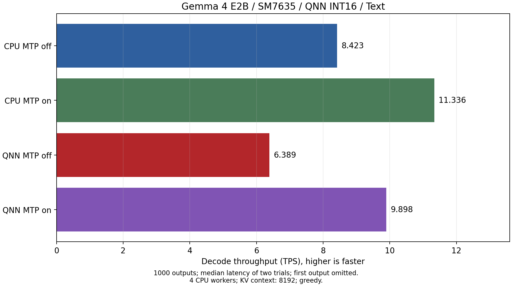
Estimated time from image or audio input until the answer finishes generating, computed from the TTFT and decode throughput below (TTFT + (output tokens − 1) / decode throughput). Image input outputs 100 tokens and audio input 32 tokens. It includes both the prefill and encoder time and the decode time.
| Device / model | Input | CPU (without MTP) | CPU (with MTP) | NPU (without MTP) | NPU (with MTP) |
|---|---|---|---|---|---|
| SM8475 E2B / FP16 | Image | 44.7 s | 46.9 s | 27.8 s | 18.5 s |
| Audio | 25.2 s | 24.1 s | 11.8 s | 8.3 s | |
| SM7635 E2B / Int16 | Image | 30.3 s | 26.7 s | 24.8 s | 17.9 s |
| Audio | 18.0 s | 16.0 s | 12.4 s | 9.5 s | |
| SM7635 E4B / Int16 | Image | 121.5 s | 119.2 s | 47.5 s | 47.6 s |
| Audio | 60.4 s | 54.5 s | 23.1 s | 19.1 s |
The NPU (with MTP) takes 1/1.5 to 1/2.9 of the time of the faster CPU configuration. For E2B, it is 1.3x to 1.5x shorter than without MTP. For image input with E4B on SM7635, the time is almost the same with and without MTP. These are not end-to-end measurements, so treat them as reference values.
Results for Gemma 4 on two devices. Snapdragon 8+ Gen 1 (SM8475 / Hexagon v69) uses the E2B FP16 model, and Snapdragon 7s Gen 3 (SM7635 / Hexagon v73) uses the E2B / E4B Int16 models. The NPU main model and assistant are the v1.5.1 MTP models (W4), with QAIRT 2.47, a context length of 8192 and the AR-256 (prefill) / AR-4 (verification) / AR-1 configuration. Measured on 2026-10-12.
The CPU uses the llama.cpp path on the same device, with a GGUF main model (Q4_K_M for E2B, QAT Q4_0 for E4B) and a Q4_0 GGUF assistant. The main model, assistant and image / audio encoders all run with 4 threads.
For both CPU and NPU, "without MTP" runs without opening the assistant, and "with MTP" opens the assistant on the same main model (draft length 3). Each condition was measured twice in the order off → on → on → off, and the median time is shown. Each trial uses a new instance, with a 20-second gap between trials. TPS is computed from the time excluding the first output token. Sampling is greedy (temperature 0, top-k 1, top-p 1, seed 1234). The generated token sequences differ with and without MTP.
CPU usage is the process CPU time divided by the elapsed time and 8 cores, with all 8 cores fully used as 100%. Temperature and clocks were not fixed.
Throughput for an 81-token input and 1,000 generated tokens. The acceptance rate is the fraction of candidates proposed by the assistant that were accepted by the main model's verification.
| Device | Model | CPU (without MTP) | CPU (with MTP) | NPU (without MTP) | NPU (with MTP) | MTP speedup (CPU / NPU) | Acceptance (CPU / NPU) |
|---|---|---|---|---|---|---|---|
| SM8475 (Hexagon v69) | E2B / FP16 | 9.189 tokens/s | 8.658 tokens/s | 5.353 tokens/s | 9.675 tokens/s | 0.94x / 1.81x | 31.1% / 33.7% |
| SM7635 (Hexagon v73) | E2B / Int16 | 8.423 tokens/s | 11.336 tokens/s | 6.389 tokens/s | 9.898 tokens/s | 1.35x / 1.55x | 31.1% / 35.6% |
| SM7635 (Hexagon v73) | E4B / Int16 | 4.217 tokens/s | 6.944 tokens/s | 3.122 tokens/s | 3.164 tokens/s | 1.65x / 1.01x | 37.1% / 39.1% |
With MTP, NPU decode is 1.81x for E2B on SM8475, 1.55x for E2B on SM7635 and 1.01x for E4B. MTP can also be used on the CPU (4 threads): 1.35x for E2B on SM7635, 1.65x for E4B and 0.94x for E2B on SM8475. Comparing both with MTP, the NPU is 1.12x (SM8475 E2B), 0.87x (SM7635 E2B) and 0.46x (SM7635 E4B) the CPU. Process CPU use during decode is 42% to 49% on the CPU and 1.6% to 5.0% on the NPU (CPU usage).
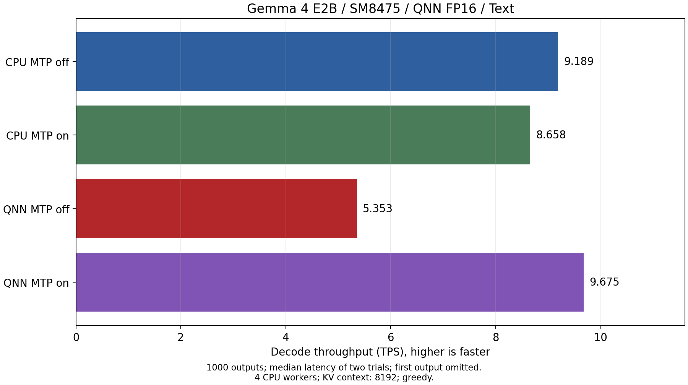
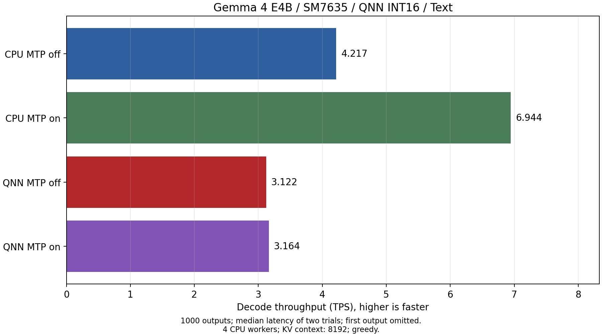
In the MTP curves, the time of each main-model run (round) is divided evenly among the tokens committed in that round. Rounds where many candidates are accepted show high TPS and rounds where all candidates are rejected show low TPS, so the values swing up and down. The TPS in the legend is computed from the total time.
Throughput (tokens/s) when the number of input tokens varies from 64 to 2,048. For each input length, a 2-token warm-up is run, the KV cache is cleared, and only one token is generated.
| Device / model / path | 64 | 128 | 256 | 512 | 1024 | 2048 |
|---|---|---|---|---|---|---|
| SM8475 E2B CPU (without MTP) | 35.337 | 33.201 | 32.409 | 31.383 | 29.327 | 27.196 |
| SM8475 E2B CPU (with MTP) | 31.128 | 31.366 | 31.310 | 30.978 | 29.101 | 27.040 |
| SM8475 E2B NPU (without MTP) | 69.770 | 136.787 | 265.156 | 287.433 | 283.803 | 281.277 |
| SM8475 E2B NPU (with MTP) | 71.074 | 136.212 | 266.966 | 287.802 | 283.944 | 282.239 |
| SM7635 E2B CPU (without MTP) | 57.466 | 54.395 | 51.547 | 47.661 | 37.408 | 33.600 |
| SM7635 E2B CPU (with MTP) | 50.451 | 49.910 | 49.452 | 46.387 | 34.608 | 31.654 |
| SM7635 E2B NPU (without MTP) | 33.106 | 65.713 | 130.399 | 130.210 | 129.942 | 128.918 |
| SM7635 E2B NPU (with MTP) | 33.688 | 67.355 | 133.535 | 133.397 | 131.292 | 130.078 |
| SM7635 E4B CPU (without MTP) | 34.773 | 35.415 | 38.182 | 36.076 | 29.317 | 27.488 |
| SM7635 E4B CPU (with MTP) | 33.002 | 34.064 | 32.739 | 32.094 | 29.620 | 26.869 |
| SM7635 E4B NPU (without MTP) | 20.944 | 40.843 | 81.231 | 83.990 | 81.732 | 81.338 |
| SM7635 E4B NPU (with MTP) | 20.863 | 40.969 | 81.235 | 84.102 | 79.278 | 83.247 |
actual input tokens / time of the first generate call. Model opening is not included.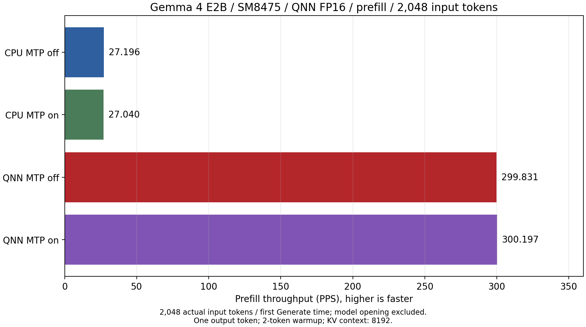
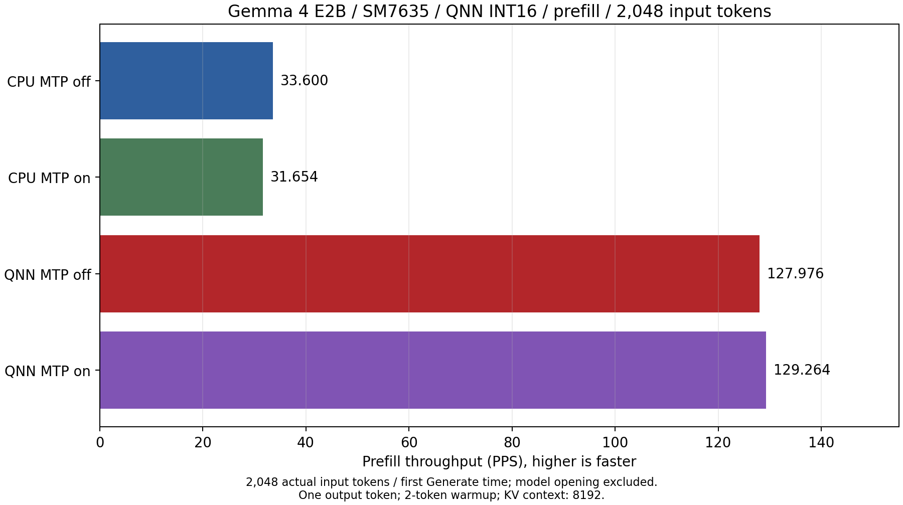
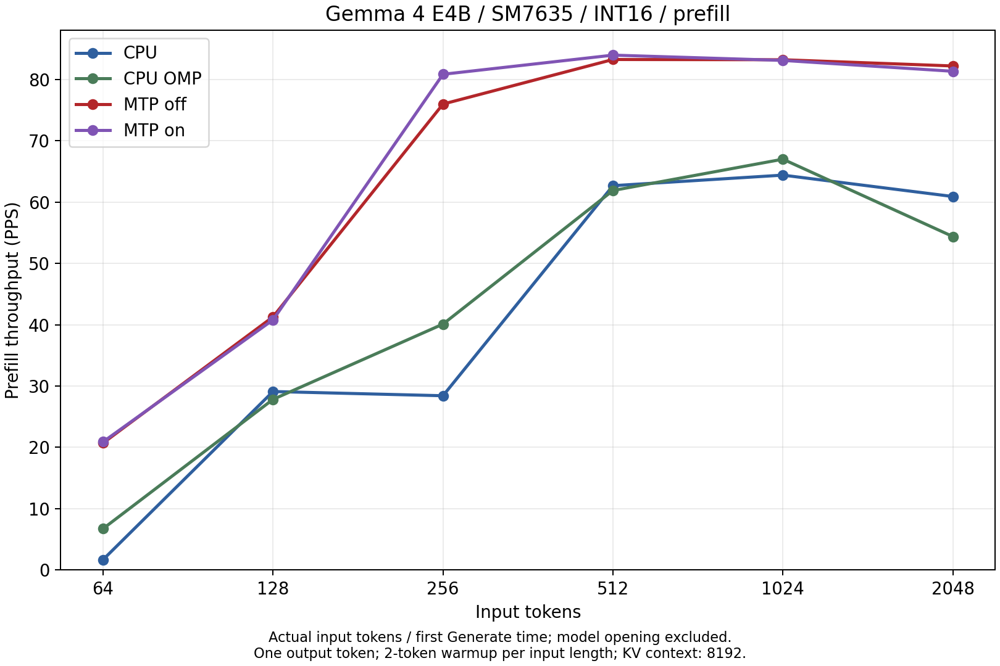
Text generation TTFT in the decode throughput measurements (81-token input, each trial on a new instance) is shown below. On the NPU, the first generation right after opening the model restores the main model's QNN context, and this time is included.
| Device / model | CPU (without MTP) | CPU (with MTP) | NPU (without MTP) | NPU (with MTP) |
|---|---|---|---|---|
| SM8475 E2B / FP16 | 3.56 s | 2.80 s | 3.41 s | 3.25 s |
| SM7635 E2B / Int16 | 1.81 s | 1.72 s | 3.76 s | 3.50 s |
| SM7635 E4B / Int16 | 7.89 s | 6.20 s | 8.43 s | 8.29 s |
Process CPU usage during decode (81-token input, 1,000 generated tokens, excluding the first output). All 8 cores fully used is shown as 100%. This is the usage of the application process, not of the whole device.
| Device / model | Input | CPU (without MTP) | CPU (with MTP) | NPU (without MTP) | NPU (with MTP) |
|---|---|---|---|---|---|
| SM8475 E2B | Text | 48.9% | 48.3% | 3.2% | 4.0% |
| Image | 48.7% | 48.1% | 3.4% | 4.5% | |
| Audio | 48.6% | 47.3% | 3.1% | 5.0% | |
| SM7635 E2B | Text | 49.0% | 48.0% | 2.9% | 4.8% |
| Image | 48.7% | 47.7% | 3.1% | 4.8% | |
| Audio | 48.7% | 47.0% | 2.8% | 4.9% | |
| SM7635 E4B | Text | 48.3% | 46.5% | 1.6% | 1.9% |
| Image | 48.5% | 46.8% | 1.7% | 2.0% | |
| Audio | 48.1% | 42.5% | 2.0% | 2.6% |
The CPU runs with 4 threads, so its usage is around 50%. NPU usage is 1.6% to 5.0%. During a 2,048-token prefill, usage is 49.5% to 49.8% on the CPU and 2.4% to 4.7% on the NPU. During image and audio input TTFT (prompt setup including the encoder and the first generate call), it is 44% to 49% on the CPU and 3.6% to 9.4% on the NPU.
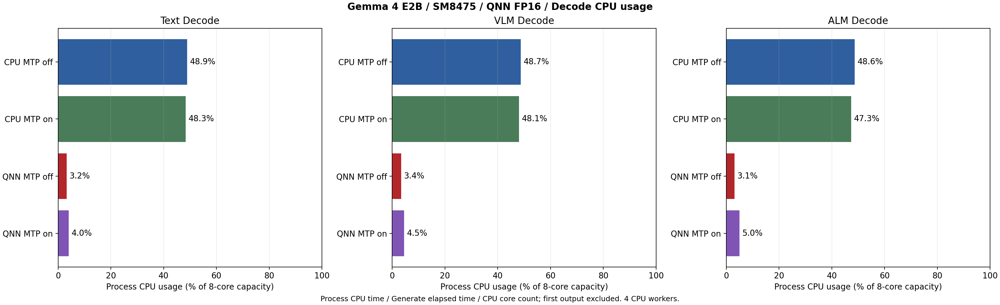
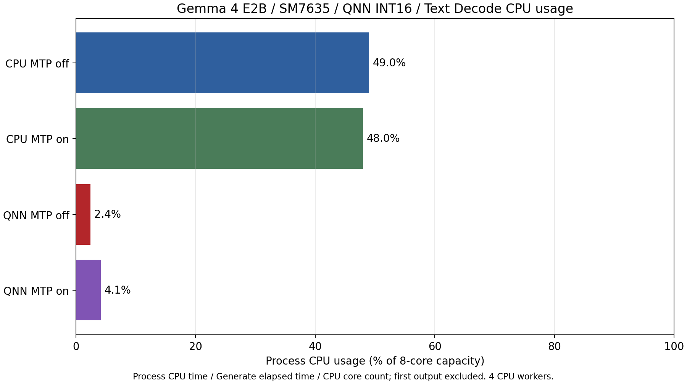
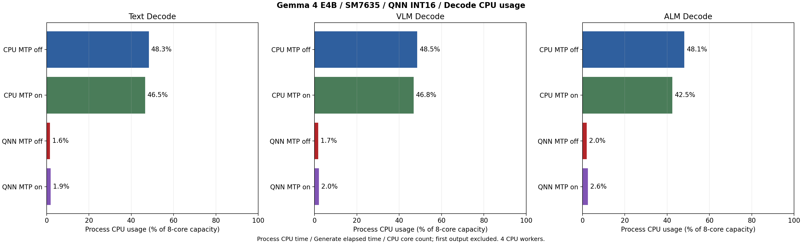
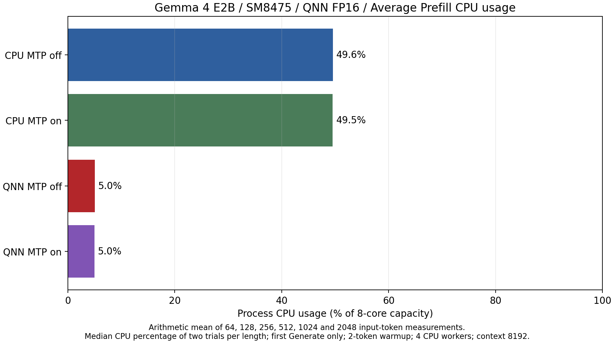
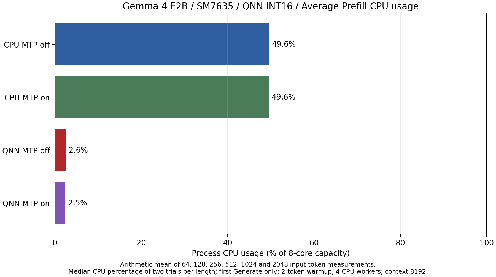
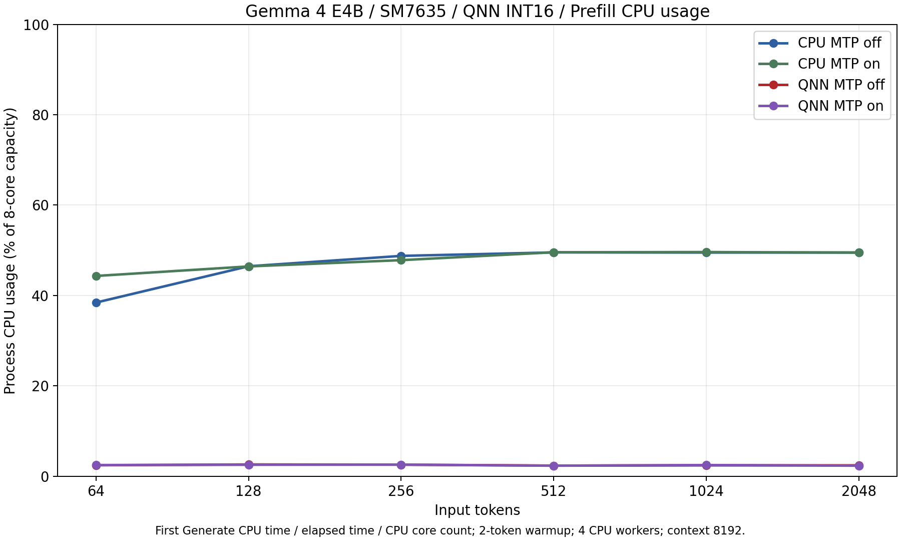
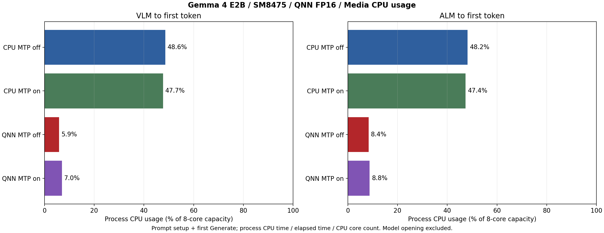
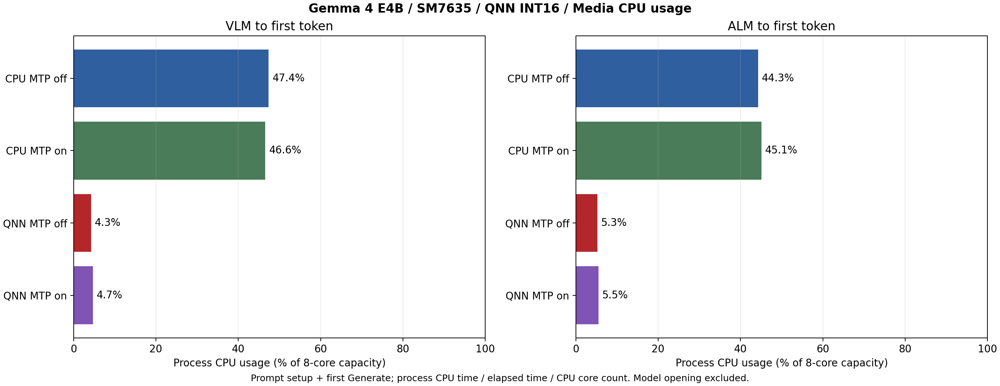
Values for one 768x768 image with 100 output tokens. TTFT is the sum of prompt setup including the image encoder and the first generate call, and does not include model opening. On the NPU, the image encoder also runs on the NPU.
| Device / model / path | TTFT | Decode | Acceptance |
|---|---|---|---|
| SM8475 E2B CPU (without MTP) | 33.46 s | 8.784 tokens/s | — |
| SM8475 E2B CPU (with MTP) | 34.00 s | 7.701 tokens/s | 28.9% |
| SM8475 E2B NPU (without MTP) | 9.12 s | 5.305 tokens/s | — |
| SM8475 E2B NPU (with MTP) | 8.04 s | 9.504 tokens/s | 36.1% |
| SM7635 E2B CPU (without MTP) | 17.99 s | 8.035 tokens/s | — |
| SM7635 E2B CPU (with MTP) | 17.74 s | 11.046 tokens/s | 28.9% |
| SM7635 E2B NPU (without MTP) | 8.87 s | 6.210 tokens/s | — |
| SM7635 E2B NPU (with MTP) | 7.93 s | 9.947 tokens/s | 37.6% |
| SM7635 E4B CPU (without MTP) | 99.00 s | 4.401 tokens/s | — |
| SM7635 E4B CPU (with MTP) | 103.83 s | 6.446 tokens/s | 37.6% |
| SM7635 E4B NPU (without MTP) | 15.71 s | 3.112 tokens/s | — |
| SM7635 E4B NPU (with MTP) | 14.32 s | 2.972 tokens/s | 35.4% |
NPU (with MTP) TTFT is 1/4.2 of the CPU (without MTP) for E2B on SM8475, 1/2.3 for E2B on SM7635 and 1/6.9 for E4B. With MTP, NPU decode is 1.79x for E2B on SM8475, 1.60x for E2B on SM7635 and 0.96x for E4B. CPU decode with MTP is 0.88x (SM8475 E2B), 1.37x (SM7635 E2B) and 1.46x (E4B).
Values for transcribing one English recording with 32 output tokens. TTFT is the sum of prompt setup including the audio encoder and the first generate call, and does not include model opening.
| Device / model / path | TTFT | Decode | Acceptance |
|---|---|---|---|
| SM8475 E2B CPU (without MTP) | 21.79 s | 9.138 tokens/s | — |
| SM8475 E2B CPU (with MTP) | 21.65 s | 12.712 tokens/s | 80.0% |
| SM8475 E2B NPU (without MTP) | 6.18 s | 5.562 tokens/s | — |
| SM8475 E2B NPU (with MTP) | 6.38 s | 16.197 tokens/s | 100.0% |
| SM7635 E2B CPU (without MTP) | 14.14 s | 7.972 tokens/s | — |
| SM7635 E2B CPU (with MTP) | 14.10 s | 16.313 tokens/s | 80.0% |
| SM7635 E2B NPU (without MTP) | 7.61 s | 6.423 tokens/s | — |
| SM7635 E2B NPU (with MTP) | 7.53 s | 15.992 tokens/s | 92.6% |
| SM7635 E4B CPU (without MTP) | 52.73 s | 4.055 tokens/s | — |
| SM7635 E4B CPU (with MTP) | 50.40 s | 7.507 tokens/s | 100.0% |
| SM7635 E4B NPU (without MTP) | 12.92 s | 3.040 tokens/s | — |
| SM7635 E4B NPU (with MTP) | 12.97 s | 5.037 tokens/s | 100.0% |
NPU (with MTP) TTFT is 1/3.4 of the CPU (without MTP) for E2B on SM8475, 1/1.9 for E2B on SM7635 and 1/4.1 for E4B. With MTP, NPU decode is 2.91x for E2B on SM8475, 2.49x for E2B on SM7635 and 1.66x for E4B, and CPU decode is 1.39x, 2.05x and 1.85x. In audio transcription, the output is largely determined by the input audio, so the acceptance rate of assistant candidates is high. This is a measurement on a single recording and is not a general speedup ratio.
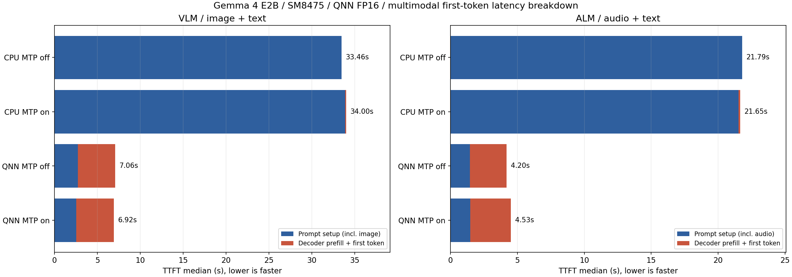
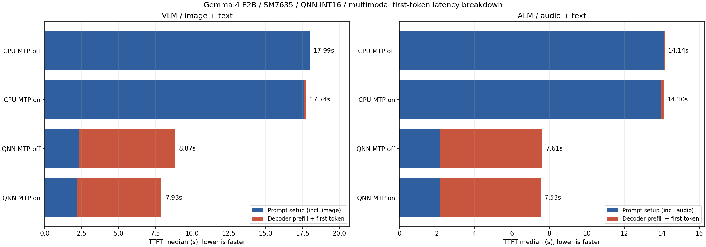
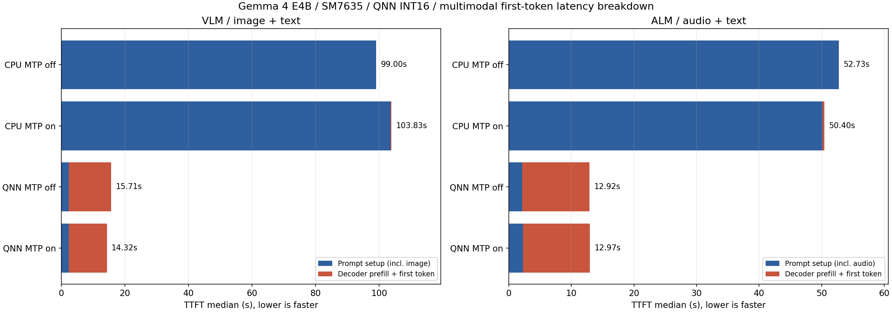
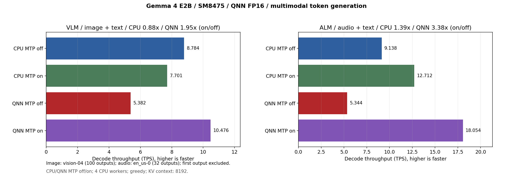
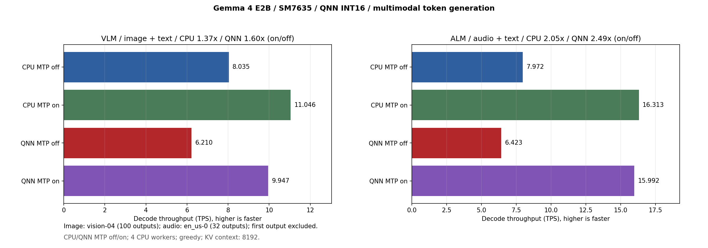
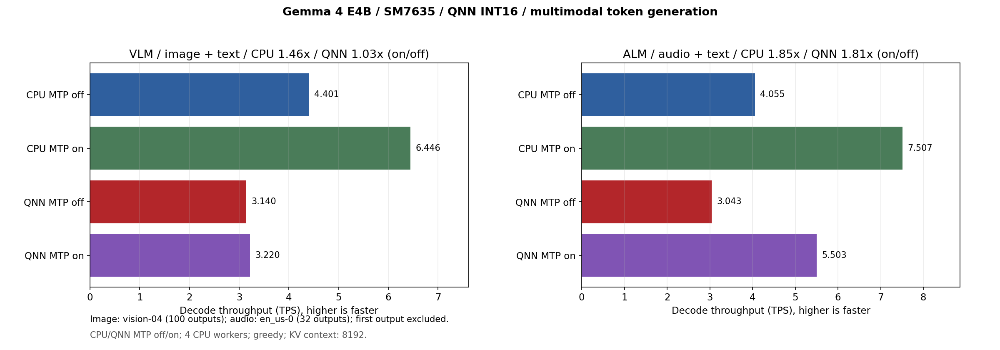
Results for the E2B NPU with temperature 0.8, top-k 40, top-p 0.95 and seed 1234. These were measured on 2026-10-10 with the previous runtime, at a different time from the tables above. With MTP, speculative sampling accepts candidates based on the probability ratio between the main model and the assistant.
| Device / model | Input | NPU (without MTP) | NPU (with MTP) | MTP speedup | Acceptance |
|---|---|---|---|---|---|
| SM8475 E2B / FP16 | Text | 6.931 tokens/s | 9.885 tokens/s | 1.43x faster | 34.8% |
| Image | 7.158 tokens/s | 10.113 tokens/s | 1.41x faster | 37.6% | |
| Audio | 7.146 tokens/s | 17.302 tokens/s | 2.42x faster | 100.0% | |
| SM7635 E2B / Int16 | Text | 6.369 tokens/s | 9.617 tokens/s | 1.51x faster | 34.7% |
| Image | 6.426 tokens/s | 10.206 tokens/s | 1.59x faster | 40.7% | |
| Audio | 5.848 tokens/s | 15.372 tokens/s | 2.63x faster | 92.6% |
With temperature, the speedup is almost the same as with greedy decoding.
Ratios of NPU (with MTP) decode to the CPU for text, image and audio input. The CPU was also measured without and with MTP using 4 threads.
| Device / model | Input | vs. CPU (without MTP) | vs. CPU (with MTP) |
|---|---|---|---|
| SM8475 E2B | Text | 1.05x | 1.12x |
| Image | 1.08x | 1.23x | |
| Audio | 1.77x | 1.27x | |
| SM7635 E2B | Text | 1.18x | 0.87x |
| Image | 1.24x | 0.90x | |
| Audio | 2.01x | 0.98x | |
| SM7635 E4B | Text | 0.75x | 0.46x |
| Image | 0.68x | 0.46x | |
| Audio | 1.24x | 0.67x |
The E2B / E4B FP16 models were measured on Snapdragon X Plus (SC8380XP / Hexagon v73, 8 cores) running Windows 11 Pro. The following three configurations were compared on the same device with the same build.
gemma4-<model>-sc8380xp.qnn)Each configuration was measured once, with a 60-second wait before each trial. The device was on AC power with the Balanced power plan, used 4 performance cores as workers, and had background apps running. CPU values are earlier measurements on the same device running the Q4_0 GGUF via the standard llama.cpp path (OpenMP disabled, 4 performance cores as workers, without MTP). GPU values are from running the same Q4_0 GGUF on the Adreno X1-45 via the llama.cpp OpenCL backend (without MTP). They were measured on 2026-10-11 with a runtime that improves GPU performance, and are faster than the GPU values in the QNN Benchmark. The QCS6490 MTP models have only been confirmed by an offline build, and performance has not been evaluated on a real device.
Throughput for an 81-token input and 1,000 generated tokens.
| Model | CPU | GPU | Non-MTP (v1.5.0) | Without MTP | With MTP | MTP speedup (vs. non-MTP) | Acceptance |
|---|---|---|---|---|---|---|---|
| E2B / FP16 | 32.505 tokens/s | 16.996 tokens/s | 7.581 tokens/s | 7.681 tokens/s | 11.361 tokens/s | 1.50x faster | 35.2% |
| E4B / FP16 | 15.230 tokens/s | 8.399 tokens/s | 4.477 tokens/s | 4.403 tokens/s | 7.614 tokens/s | 1.70x faster | 39.4% |
Without MTP, the speed is almost the same as the conventional model, so the speedup comes from the assistant and AR-4 verification. E4B is 1.70x (1.01x for SM7635 E4B on Android).
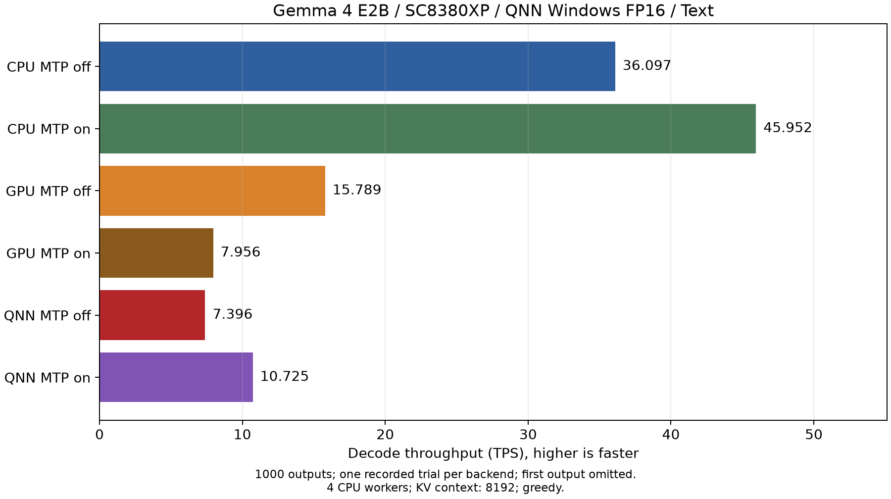
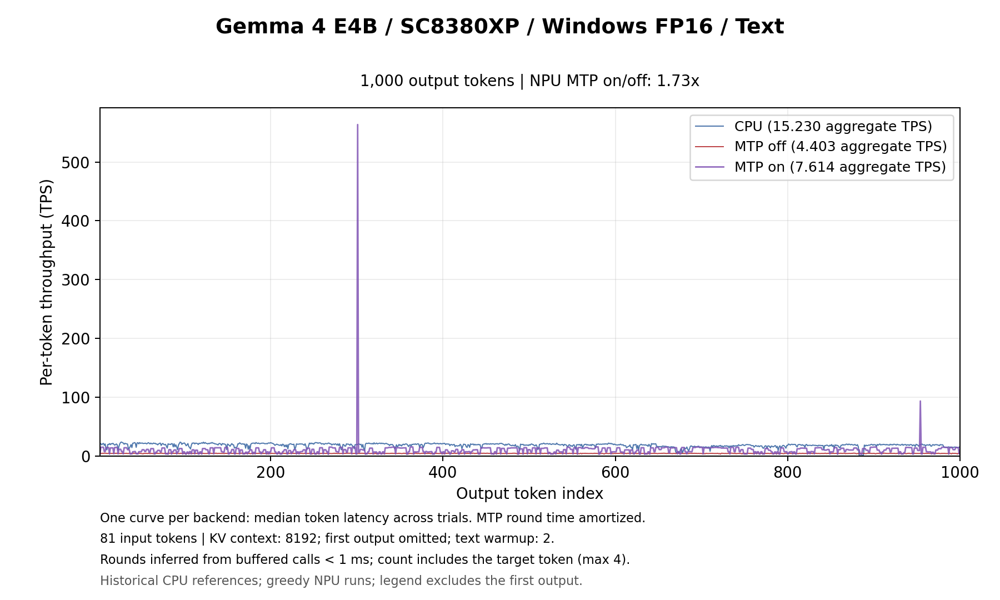
Throughput (tokens/s) when the number of input tokens varies from 64 to 2,048.
| Model / configuration | 64 | 128 | 256 | 512 | 1024 | 2048 |
|---|---|---|---|---|---|---|
| E2B CPU | 249.314 | 205.403 | 214.986 | 194.638 | 176.262 | 155.627 |
| E2B GPU | 190.718 | 208.584 | 220.448 | 205.558 | 181.273 | 151.935 |
| E2B non-MTP (v1.5.0) | 101.982 | 225.254 | 424.934 | 420.052 | 407.490 | 420.639 |
| E2B without MTP | 113.151 | 226.424 | 448.660 | 440.496 | 426.759 | 418.778 |
| E2B with MTP | 111.217 | 223.184 | 431.739 | 419.928 | 431.036 | 430.899 |
| E4B CPU | 83.793 | 98.738 | 115.542 | 106.402 | 97.419 | 80.109 |
| E4B GPU | 100.750 | 114.198 | 122.105 | 118.442 | 108.468 | 95.985 |
| E4B non-MTP (v1.5.0) | 62.413 | 124.979 | 245.360 | 257.128 | 253.727 | 247.997 |
| E4B without MTP | 62.896 | 114.516 | 227.997 | 253.767 | 249.950 | 243.701 |
| E4B with MTP | 63.008 | 114.917 | 229.531 | 254.648 | 248.715 | 248.864 |
Prefill is equivalent across all three configurations, so using the MTP-capable model does not reduce prefill performance. For a 2,048-token input, the NPU (with MTP) is about 2.77x faster than the CPU for E2B and about 3.11x for E4B, and about 2.84x faster than the GPU for E2B and about 2.59x for E4B.
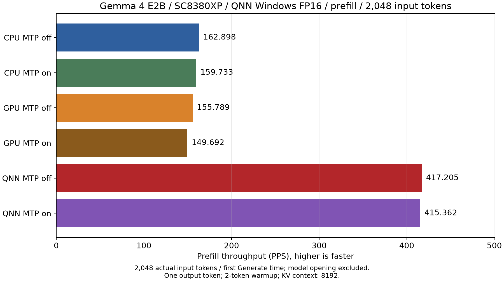
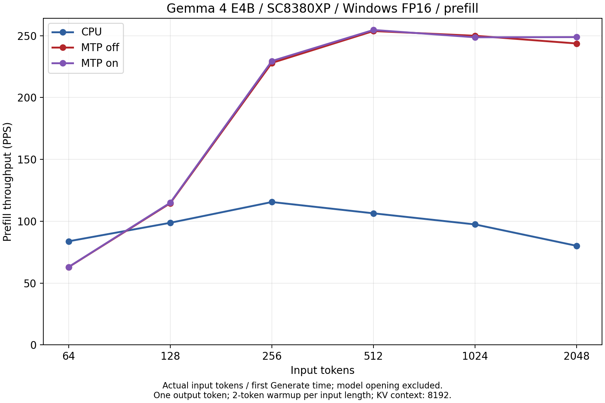
Image input uses one 768x768 image with 100 output tokens, and audio input transcribes one English recording with 33 output tokens; each is a single measurement. TTFT is the sum of prompt setup including the encoder and the first generate call, and does not include model opening. On the CPU and GPU paths, the image and audio encoders run on the CPU.
| Device / model | Input | Path | TTFT | Decode | Acceptance |
|---|---|---|---|---|---|
| SC8380XP E2B | Image | CPU | 55.48 s | 37.546 tokens/s | — |
| SC8380XP E2B | Image | GPU | 40.75 s | 17.380 tokens/s | — |
| SC8380XP E2B | Image | Non-MTP (v1.5.0) | 7.31 s | 7.617 tokens/s | — |
| SC8380XP E2B | Image | Without MTP | 7.13 s | 7.608 tokens/s | — |
| SC8380XP E2B | Image | With MTP | 6.75 s | 10.689 tokens/s | 32.0% |
| SC8380XP E2B | Audio | CPU | 28.13 s | 37.924 tokens/s | — |
| SC8380XP E2B | Audio | GPU | 16.92 s | 17.247 tokens/s | — |
| SC8380XP E2B | Audio | Non-MTP (v1.5.0) | 5.40 s | 7.219 tokens/s | — |
| SC8380XP E2B | Audio | Without MTP | 5.28 s | 7.513 tokens/s | — |
| SC8380XP E2B | Audio | With MTP | 5.14 s | 17.777 tokens/s | 92.6% |
| SC8380XP E4B | Image | CPU | 54.09 s | 20.161 tokens/s | — |
| SC8380XP E4B | Image | GPU | 42.44 s | 9.323 tokens/s | — |
| SC8380XP E4B | Image | Non-MTP (v1.5.0) | 10.94 s | 4.426 tokens/s | — |
| SC8380XP E4B | Image | Without MTP | 10.81 s | 4.445 tokens/s | — |
| SC8380XP E4B | Image | With MTP | 9.30 s | 7.918 tokens/s | 43.2% |
| SC8380XP E4B | Audio | CPU | 27.67 s | 19.444 tokens/s | — |
| SC8380XP E4B | Audio | GPU | 19.39 s | 9.366 tokens/s | — |
| SC8380XP E4B | Audio | Non-MTP (v1.5.0) | 8.13 s | 4.331 tokens/s | — |
| SC8380XP E4B | Audio | Without MTP | 7.68 s | 4.478 tokens/s | — |
| SC8380XP E4B | Audio | With MTP | 7.38 s | 12.288 tokens/s | 92.6% |
Compared with non-MTP, image-input decode is 1.40x faster for E2B and 1.79x for E4B, and audio input is 2.46x for E2B and 2.84x for E4B. TTFT does not change much across the three configurations and is 1/3.7 to 1/8.2 of the CPU and 1/2.6 to 1/6.0 of the GPU. For audio input decode, the NPU with MTP outperforms the GPU (1.03x for E2B, 1.31x for E4B).
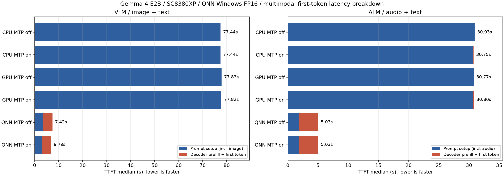
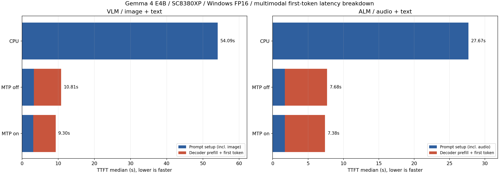
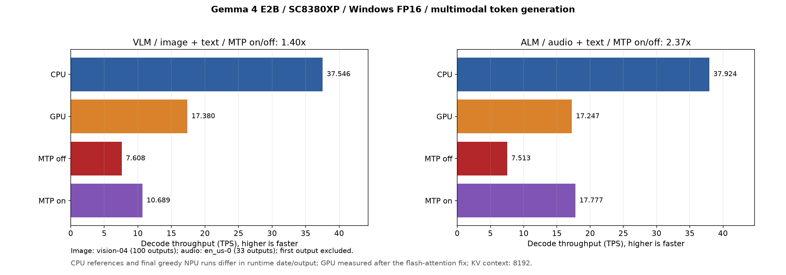
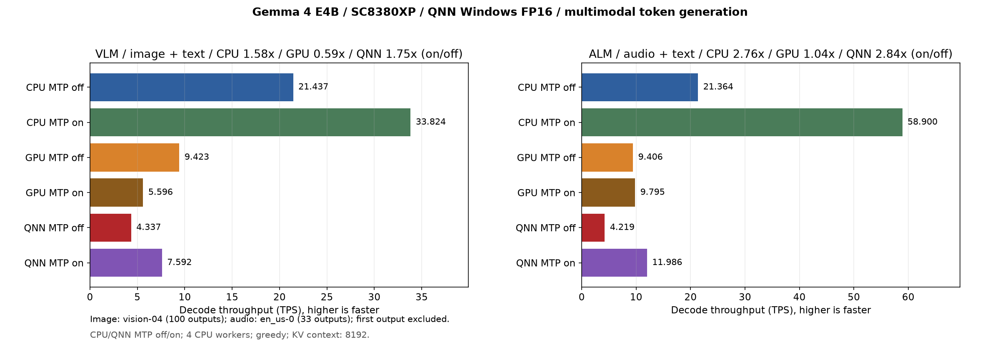